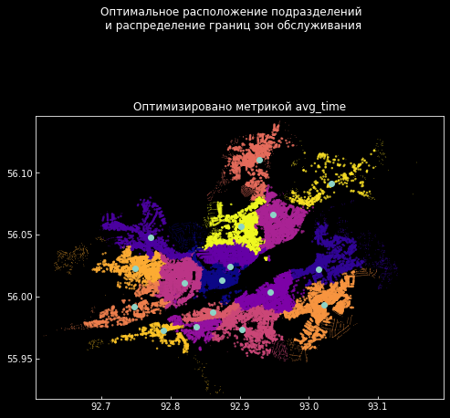
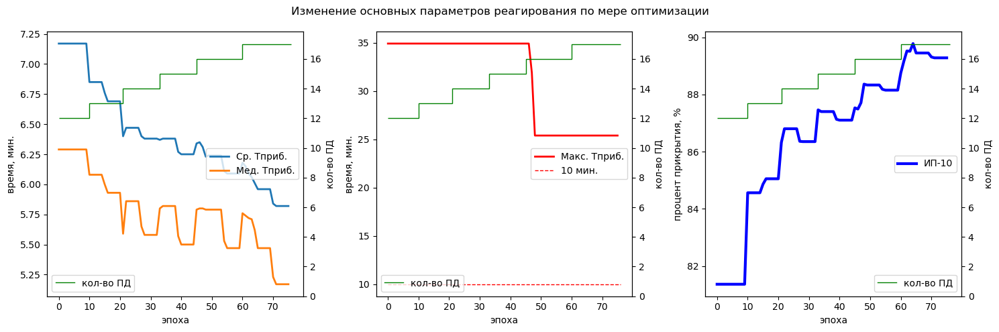

Ежедневный отчет
Среда. Расчеты для Красноярска.
gantt
title Ход работы
dateFormat HH:mm
axisFormat %H:%M
section 1. Общая работа
Подведение итогов, планирование :a1, 17:00, 30m
section 2. Расчет Красноярск
Расчет интерполяции полей прибытия подразделений :b1, 09:00, 11:00
Изучение инструментов SAGA :b2, after b1, 1h
Расчет средних скоростей для Красноярска :b3, 13:00, 30m
section 3. Арктика 2023
Таблица на участников учения :c1, 14:00, 30m
Обсудить подготовку к Емельяново :c3, 13:30, 30m
Изучить методические рекомендации :c2, after, 30m
2 Расчет Красноярск
Расчет интерполяции полей прибытия подразделений
Расчет полей времени прибытия подразделений производился при помощи инстурмента Регулярная сетка (обратно-взвешенное расстояние) приложения QGIS.
Параметры вызова следующие:
Ркзультат:
Расчет плотности пожаров
Для расчета полей плотностей пожаров был применен инструмент Тепловая карта (оценка плотности ядер).
Параметры вызова следующие:
Ркзультат:
Изучение инструментов SAGA
В ходе работы большой интерес вызвал инструмент SAGA, поставляющийся вместе с QGIS:
Инструмент обладает огромным количеством очень мощных инструментов анализа пространственных данных. При этом за счет отсутствия развитого картографического интерфейса она работает очень быстро.
На рисунке Рисунок 7 можно увидеть результат применения инструмента Multilevel B-Spline interpolation.
Следует более подробно разобраться с этим инструментом.
Кроме того выяснилось, что SAGA позволяет получать программный код втроенных алгоритмов в Python:
Результаты расчета для 30км/ч


Арктика 2023
Подготовил таблицу с данными на участников учения, для пропуска на территорию Емельяново
Ознакомился с методическими рекомендациями.